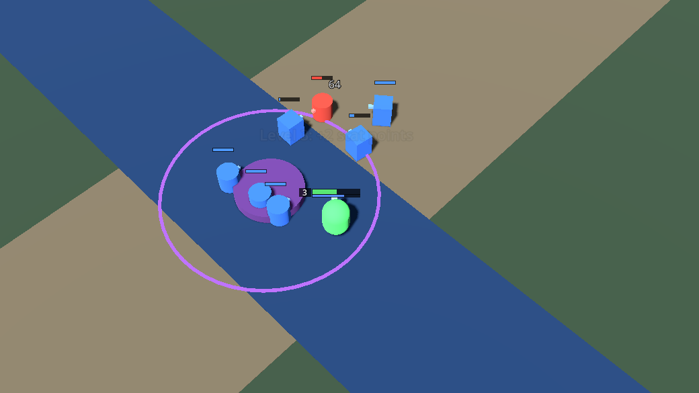
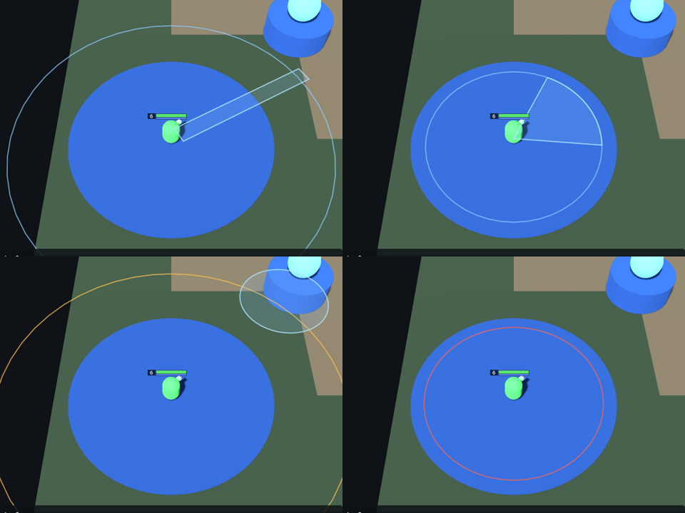

Devlog #1: A MOBA with no shop
Hi! I'm Ynairally, a solo indie dev, and this is the first devlog for Relic Protocol (first announced under the code name Project Altar), a 5v5 MOBA I'm building in Godot.
The idea
Relic Protocol keeps what I love about MOBAs (three lanes, a jungle, last-hitting, teamfights) and removes the part I don't: the shop. There is no gold and no item building. You grow in two ways.
Levels and attributes. Every level gives you points to spend on Strength (health and armor), Agility (attack speed and move speed) or Intelligence (mana and magic damage). Points in your hero's primary attribute also add basic-attack damage.
Relics. Relics appear at an altar in the middle of the map at regular intervals. To claim one, you have to hold the ground next to it for a few seconds. An enemy in the circle freezes your progress; getting stunned, leaving or dying resets it. Relics grow stronger with the level of the hero holding them, you can carry a few at once, and you keep them when you die. Inventory full? Drop one, or hand it to a teammate.

Two hard rules
No blinks or dashes, and no invisibility. Positioning should matter, and you should always be able to see what's coming. Minions are solid, too, so you can't just walk through a wave.
What's built so far
Today the first playable prototype came together: a gray-box map, a full offline match simulation, the first hero (Orin Ash), a bot to play against, the relic altar, relic giving between teammates, and LoL/Dota-style controls with ground-targeted skill indicators.


Next
Dedicated servers so real players can fight each other, then more heroes.
If a shopless MOBA sounds interesting, follow along here. I'll post every milestone.
Proof of date
git commit 2b394384009dec474b6c22b06238a863120d7c01